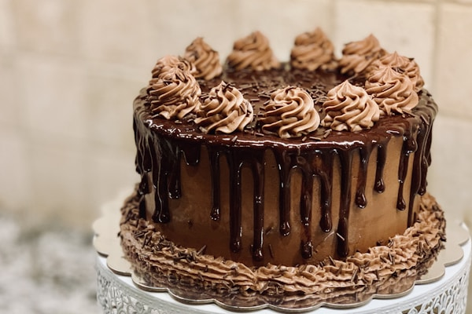

На главную
Десерт
Шоколадный торт "Прага"

Ингредиенты
Для бисквита:
- Яйца - 5 штук
- Сахар - 150 грамм
- Мука - 120 грамм
- Какао-порошок - 30 грамм
- Сливочное масло - 50 грамм
Для крема:
- Сгущенное молоко - 380 грамм
- Сливочное масло - 200 грамм
- Какао-порошок - 30 грамм
- Яичный желток - 1 штука
Для глазури и начинки:
- Черный шоколад - 150 грамм
- Сливочное масло - 50 грамм
- Абрикосовый джем - 100 грамм
Приготовление
- Испеките шоколадный бисквит. Остудите и разрежьте на три коржа.
- Приготовьте крем: взбейте размягченное масло, постепенно добавляя сгущенное молоко с какао и желтком.
- Прослоите коржи кремом. Верхний корж и бока торта смажьте тонким слоем абрикосового джема.
- Растопите шоколад со сливочным маслом на водяной бане до получения однородной глазури.
- Покройте торт шоколадной глазурью.
- Поставьте торт в холодильник на несколько часов для пропитки.
- Украсьте по желанию и подавайте.
Совет
Этот торт требует времени на подготовку и охлаждение, но оно того стоит. Результат - это невероятно вкусный и красивый десерт с идеальным сочетанием шоколада, крема и абрикосового джема. Рекомендуется готовить торт за день до подачи.